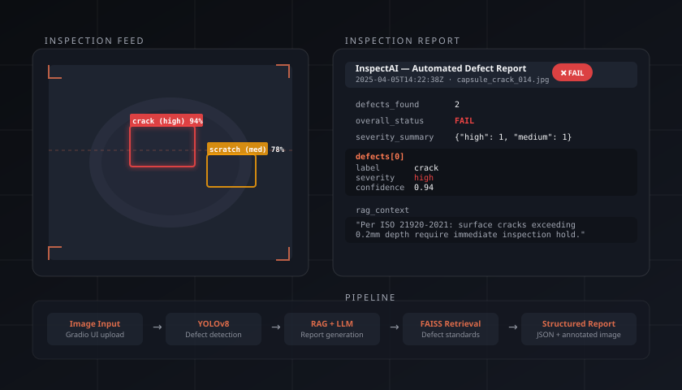
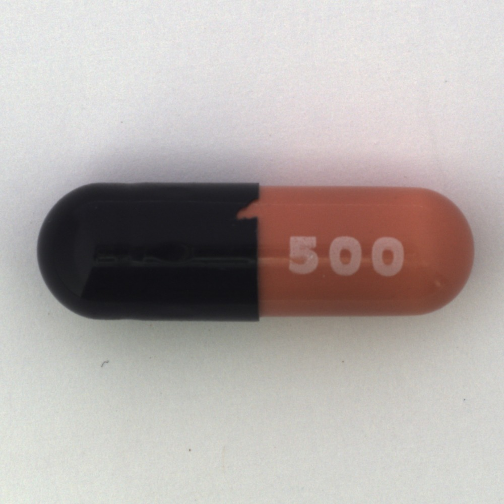
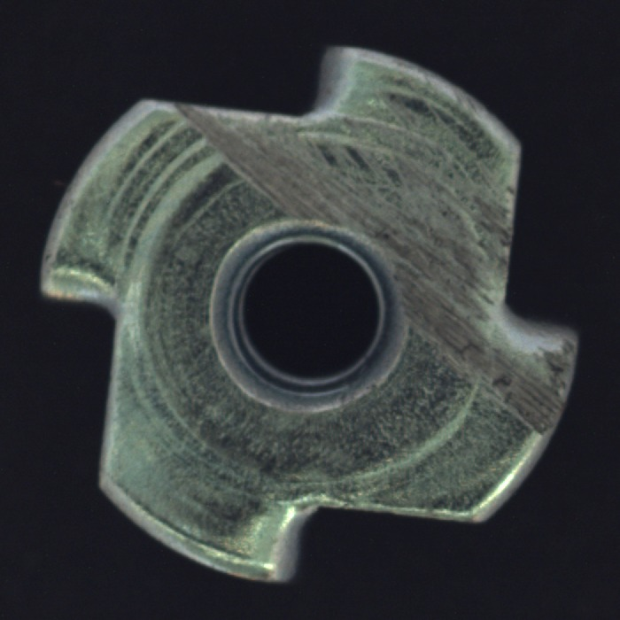

Featured Project
InspectAI
Agentic visual inspection system — upload an image, get a structured defect report powered by computer vision and a local LLM agent.
Featured Project
Agentic visual inspection system — upload an image, get a structured defect report powered by computer vision and a local LLM agent.
InspectAI is a production-style AI pipeline that simulates an industrial visual inspection system. Given an image of a surface or component, the system detects defects using a fine-tuned YOLOv8 model trained on the MVTec Anomaly Detection dataset, classifies each finding by type and severity, and hands the results to an LLM agent that generates a structured inspection report cross-referenced against a RAG knowledge base of defect standards.
The entire stack runs locally — no cloud services or API keys required. It is packaged with Docker so any operator can spin it up with a single command, and the Gradio web UI is designed to be usable by non-technical quality-control staff.

The pipeline has four sequential stages. An uploaded image is passed to the YOLOv8 detector, which returns bounding boxes, class labels, and confidence scores. Those detections are then forwarded to the LLM agent alongside relevant context retrieved from the FAISS knowledge base. The agent produces a validated JSON report that is rendered back to the user alongside the annotated image.
localhost:7860.
The model is trained on the MVTec AD benchmark, which covers 15 object and texture categories. Below are two representative samples from the dataset used for fine-tuning: capsule surface cracks and metal nut scratches.


The detection model is fine-tuned on the
MVTec Anomaly Detection Dataset — an industry-standard benchmark
covering 15 object and texture categories with over 5,000 high-resolution images.
Training is handled by scripts/train.py, which:
torch-directml on Windows (RX 7700 XT: ~30–40 min vs. 2.5 h on CPU)models/inspectai_yolov8.pt and optionally to ONNX for cross-platform inference
A full training walkthrough is available in notebooks/training.ipynb,
including dataset preparation, class mapping, and evaluation metrics.
The fastest way to run InspectAI is via Docker:
git clone https://github.com/Ghost159915/InspectAI.git cd InspectAI docker compose up
Then open http://localhost:7860. For a local Python setup, pull
llama3.2 with Ollama, install requirements.txt, and run
python main.py.